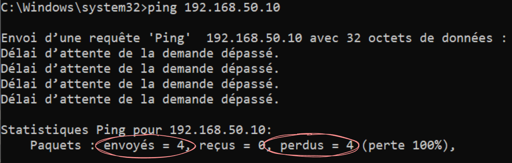
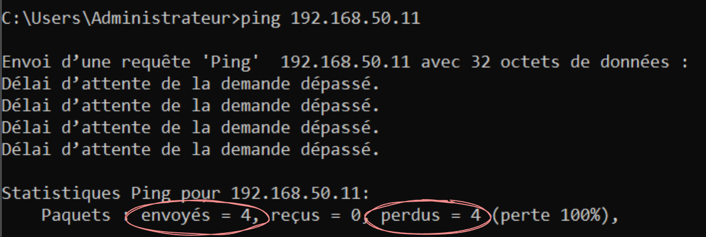
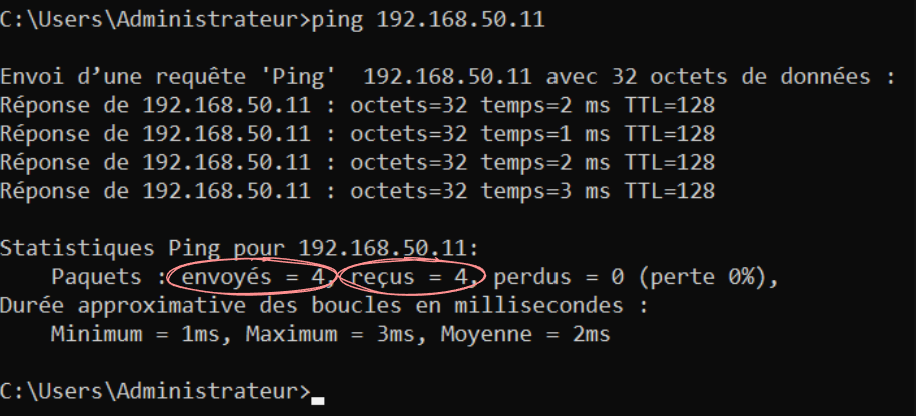
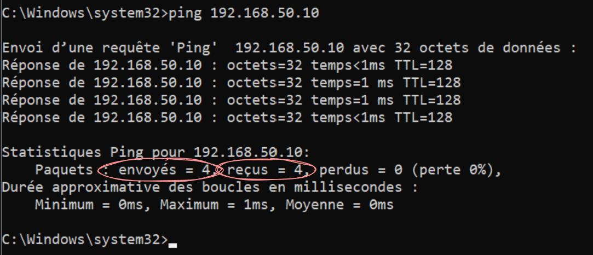
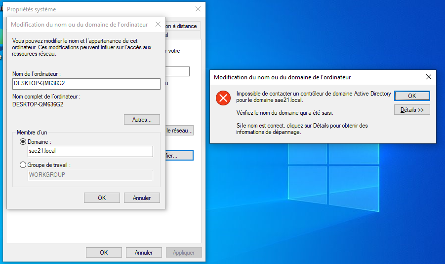
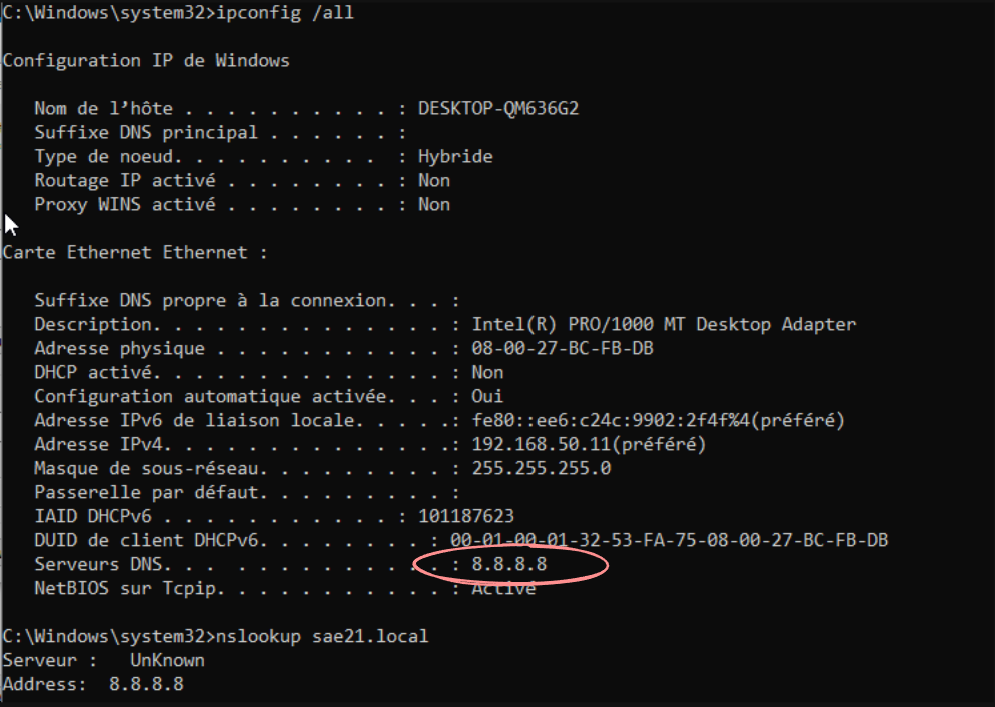
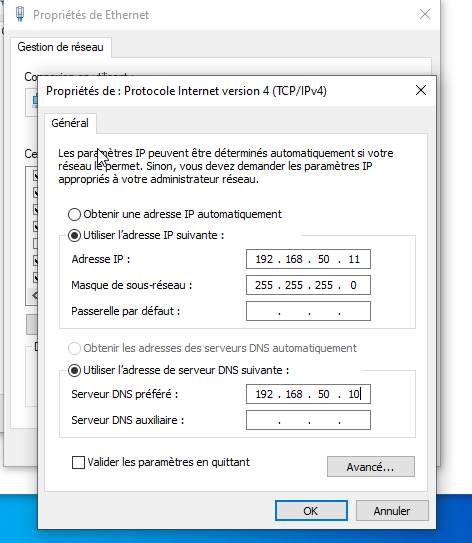
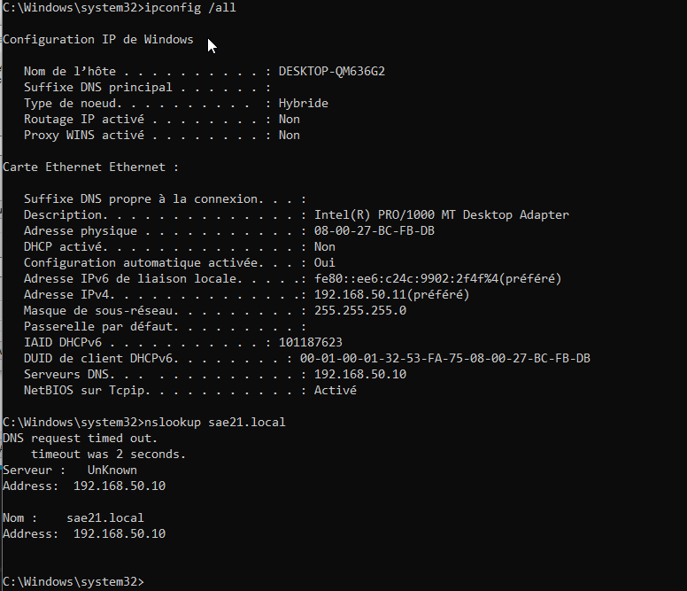
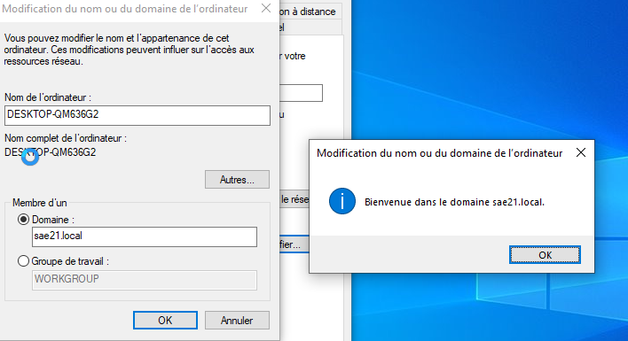

SAÉ 2.01
Construire un réseau informatique pour une petite structure
Construire un réseau informatique pour une petite structure
Dans le cadre de la SAÉ 2.01 « Construire un réseau informatique pour une petite structure », j'ai travaillé sur la mise en place progressive d'une infrastructure réseau dans un environnement virtualisé.
L'objectif était de construire un environnement composé d'un serveur et d'un poste client, de permettre leur communication, puis de mettre en place des services permettant l'administration du réseau.
J'ai utilisé Oracle VirtualBox afin de créer un réseau interne isolé. Le serveur utilise Windows Server 2022 et le poste client utilise Windows.
Au cours de la réalisation, j'ai rencontré plusieurs difficultés. Elles m'ont permis d'adopter une démarche de diagnostic, d'identifier les causes des problèmes et de mettre en place des solutions adaptées.
Cette SAÉ m'a principalement permis de travailler les apprentissages critiques suivants :
La réalisation de cette SAÉ m'a permis de mettre en pratique ces apprentissages à travers la configuration d'un réseau local, l'administration de Windows Server, la mise en place d'Active Directory et de DNS ainsi que le diagnostic de problèmes de communication réseau.
J'ai commencé par créer deux machines virtuelles dans VirtualBox afin de construire un environnement de laboratoire.
Les deux machines ont été placées sur un même réseau interne VirtualBox nommé SAE21.
Après avoir créé les deux machines virtuelles et configuré leurs adresses IP, j'ai voulu vérifier que le serveur et le poste client pouvaient communiquer avant de poursuivre la réalisation du projet.
Le serveur avait l'adresse 192.168.50.10 et le client l'adresse 192.168.50.11.
Les deux machines étaient configurées avec le masque 255.255.255.0 et étaient connectées au même réseau interne VirtualBox.
J'ai effectué un test de communication avec la commande ping.
Cependant, le serveur ne recevait aucune réponse du poste client et le test indiquait un délai d'attente dépassé.
J'ai commencé par vérifier la configuration IP des deux machines à l'aide de la commande :
Les adresses IP étaient cohérentes et les deux machines appartenaient au même réseau IPv4.

Vérification de la configuration réseau initiale du serveur.

Vérification de la configuration réseau initiale du poste client.
La configuration des adresses IP étant correcte, j'ai ensuite vérifié la configuration réseau des machines virtuelles dans VirtualBox.
Les deux cartes réseau étaient connectées au même réseau interne nommé SAE21 et les câbles virtuels étaient activés.
Le problème venait finalement du pare-feu Windows qui bloquait les requêtes ICMP utilisées par la commande ping.
Plutôt que de désactiver complètement le pare-feu, j'ai choisi d'autoriser uniquement les requêtes ICMPv4 nécessaires aux tests de connectivité.
Après la création de cette règle, j'ai effectué un nouveau test de communication entre les deux machines.

Vérification du serveur après la résolution du problème.

Vérification du poste client après la résolution du problème.
Après la modification du pare-feu, les deux machines ont pu communiquer correctement. Le test de connectivité était désormais fonctionnel.
Cette première difficulté m'a permis de comprendre qu'une configuration IP correcte ne garantit pas nécessairement qu'une communication réseau sera possible.
J'ai appris à effectuer un diagnostic progressivement : vérifier l'adressage, contrôler la configuration du réseau virtuel, puis vérifier les mécanismes de filtrage du système d'exploitation.
J'ai également compris qu'il est préférable d'appliquer une correction ciblée plutôt que de désactiver complètement un mécanisme de sécurité.
Une fois la communication réseau établie, j'ai poursuivi la configuration du serveur afin de mettre en place un domaine Active Directory.
Sur Windows Server 2022, j'ai installé le rôle Services AD DS, puis j'ai promu le serveur en contrôleur de domaine.
J'ai créé une nouvelle forêt avec le domaine :
Le serveur assurait également le rôle de serveur DNS pour le domaine.
Le poste client possédait l'adresse IP 192.168.50.11.
Pour provoquer une situation de diagnostic, j'ai configuré temporairement le serveur DNS du client avec l'adresse publique :
L'objectif était ensuite de vérifier si le poste client pouvait trouver et rejoindre le domaine sae21.local.
J'ai essayé d'intégrer le poste client au domaine sae21.local.
Windows n'a pas réussi à contacter un contrôleur de domaine Active Directory.

Échec de l'intégration du poste client au domaine sae21.local.
L'adresse IP du client était correcte et la communication réseau entre les deux machines fonctionnait déjà.
J'ai donc cherché à vérifier la résolution DNS du domaine. Pour cela, j'ai utilisé la commande :
Cette commande m'a permis de constater que le poste client utilisait 8.8.8.8 comme serveur DNS.

Diagnostic montrant l'utilisation de 8.8.8.8 comme serveur DNS sur le poste client.
J'ai ensuite utilisé :
Le domaine interne n'était pas correctement résolu par le serveur DNS utilisé par le client.
J'ai compris que le poste client devait utiliser le serveur DNS associé au domaine Active Directory plutôt qu'un serveur DNS public.
J'ai modifié la configuration IPv4 du poste client afin d'utiliser le serveur Windows Server 2022 comme serveur DNS.
L'adresse du serveur DNS a donc été remplacée par :

Configuration corrigée du poste client avec le serveur DNS du domaine.
Après la modification, j'ai vidé le cache DNS du client avec :
J'ai ensuite effectué une nouvelle recherche DNS :
Le domaine sae21.local a alors été résolu vers l'adresse IP du serveur :

Vérification de la résolution du domaine sae21.local après correction du serveur DNS.
Après avoir corrigé la configuration DNS, j'ai effectué une nouvelle tentative d'intégration du poste client au domaine sae21.local.
Cette fois, Windows a réussi à contacter le contrôleur de domaine et a demandé les identifiants d'un compte autorisé à rejoindre le domaine.
J'ai utilisé le compte administrateur du domaine afin d'autoriser l'intégration du poste.
L'intégration a finalement réussi et Windows a affiché le message :

Intégration réussie du poste client au domaine sae21.local.
Cette situation m'a permis de comprendre le rôle essentiel du DNS dans une infrastructure Active Directory.
J'ai compris qu'un poste client peut être correctement configuré au niveau IP et communiquer avec un serveur sans pour autant réussir à rejoindre un domaine Active Directory.
Pour qu'un domaine soit trouvé correctement, le poste client doit utiliser le serveur DNS capable de résoudre les noms associés au domaine Active Directory.
Cette expérience m'a également appris à utiliser ipconfig /all et nslookup pour identifier un problème de résolution de noms.
Les deux problèmes rencontrés m'ont permis de suivre une progression logique dans la construction de l'infrastructure.
Ces deux situations m'ont montré qu'un réseau fonctionnel nécessite plusieurs éléments complémentaires : un adressage cohérent, une communication autorisée entre les machines, une résolution DNS correcte et des services correctement configurés.
J'ai également développé une méthode de travail basée sur l'observation, les tests, l'analyse des résultats, la correction puis la vérification finale.
La réalisation de cette SAÉ m'a permis de comprendre que l'administration réseau ne consiste pas uniquement à configurer des adresses IP.
Lors du premier problème, j'ai appris à vérifier plusieurs niveaux de fonctionnement avant de modifier la configuration. Le réseau était correctement adressé, mais le pare-feu empêchait les tests ICMP.
Lors du deuxième problème, j'ai découvert l'importance du DNS dans une infrastructure Active Directory. Même si le client pouvait communiquer avec le serveur au niveau IP, il ne pouvait pas localiser correctement le domaine lorsque son serveur DNS était mal configuré.
Ces situations m'ont permis d'améliorer ma méthode de diagnostic. Je cherche maintenant à identifier précisément la couche ou le service responsable du problème avant d'appliquer une modification.
Je souhaite continuer à développer cette autonomie en travaillant sur d'autres services réseau et en réalisant davantage de configurations dans des environnements virtualisés.
Cette SAÉ m'a permis de renforcer mes compétences en configuration réseau et en administration de systèmes Windows.
Je suis maintenant capable de mettre en place un environnement réseau simple entre plusieurs machines virtuelles, de vérifier leur connectivité et de rechercher l'origine d'un problème réseau.
J'ai également acquis des premières compétences dans l'administration d'Active Directory et dans la configuration du DNS nécessaire au fonctionnement d'un domaine.
Je dois encore approfondir l'administration des services Windows Server et les mécanismes d'Active Directory afin d'être plus autonome face à des infrastructures plus complexes.